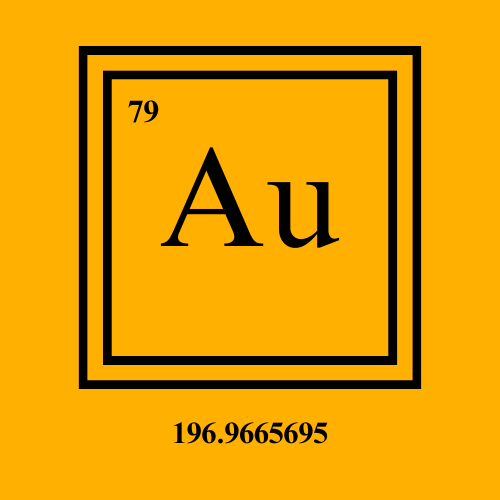

Altın(Au)

Altın, periyodik tablonun 6. periyodunun 11. grubunda yer alan bir elementtir. Altının atom numarası 79'dur. Altın, Au sembolü ile gösterilir ve metaldir.
Altının Tarihçesi ve Kullanım Alanları
Altının simgesi (Au) Latincede “altın” anlamına gelen aurum kelimesine dayanır.
Sarı renkte bir metaldir.
Dövülerek kolayca şekillendirilebilir.
Altının insanlar tarafından çok eski zamanlardan beri kullanıldığı biliniyor.
MÖ 1323’te ölen firavun Tutankamon’unmezarından çıkan maske altından yapılmıştı.
Altın paralar ilk defa Anadolu’da Lidyalılar tarafından basıldı.
Altın uluslararası bir ödeme aracı olarak hâlen kullanılıyor.
Çok eski zamanlardan beri insanlar tarafından süs eşyası olarak kullanılıyor.
Tepkimeye girmeye isteksiz bir element olduğundan korozyona (kimyasal olarak aşınmaya)
karşı dirençli olması ve elektriği iyi iletmesi nedeniyle 20. yüzyılın sonundan itibaren endüstride kullanılmaya başlandı.
Bilgisayarlarda, uzay araçlarında, elektronik cihazlarda ve uçak motorlarında kullanılır.
Nano ölçekteki altın parçacıkları endüstride katalizör (kimyasal tepkimelerin daha hızlı gerçekleşmesini sağlayan ancak kendisi tepkimede harcanmayan maddeler) olarak kullanılır.